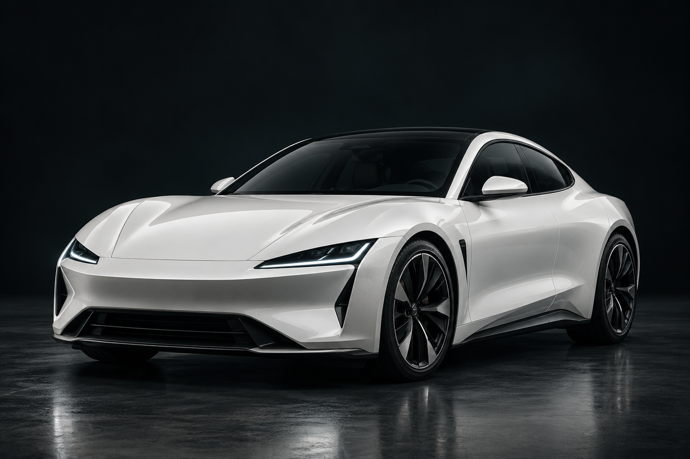

FORM, BEFORE THE NOISE.
SILENTFURY
QUIET FORM.
A DIFFERENT KIND OF PRESENCE.
原片页面墙与品牌扇形中可辨SILENT / FURY、白车、暗底与绿色入口。照片独立生成，车型/场景不同；所有标记、光线、收藏与详情为自编补写，不代表真实厂商、车辆性能或作者完整网页。

FORM, BEFORE THE NOISE.
QUIET FORM.
A DIFFERENT KIND OF PRESENCE.
原片页面墙与品牌扇形中可辨SILENT / FURY、白车、暗底与绿色入口。照片独立生成，车型/场景不同；所有标记、光线、收藏与详情为自编补写，不代表真实厂商、车辆性能或作者完整网页。